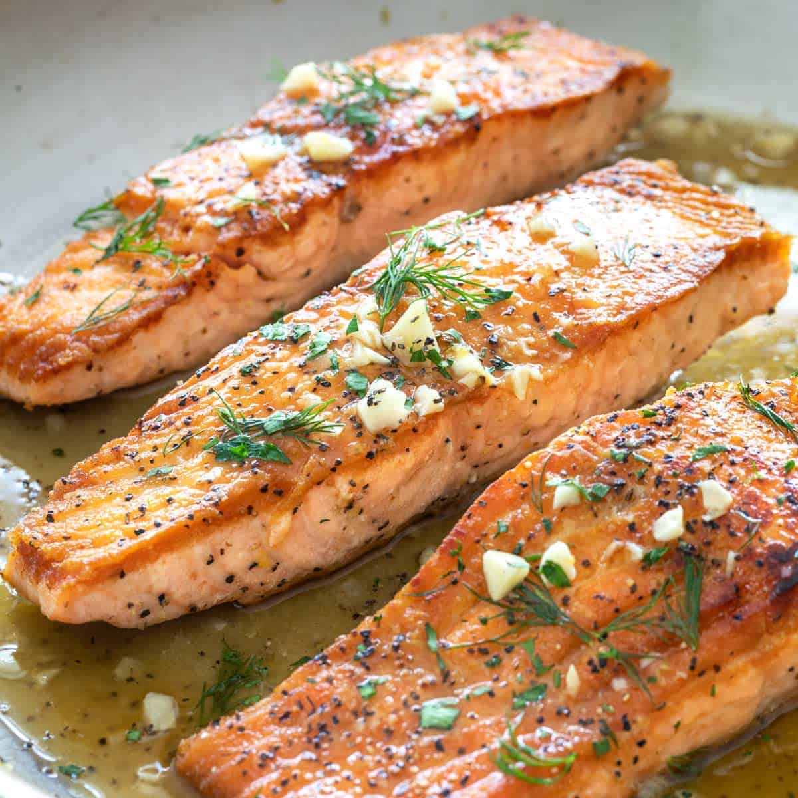

Wild Salmon
Wild salmon is one of the healthiest dishes you can eat.
Ingredients
- 1 pound wild salmon fillets (skin on)
- 1 tablespoons olive oil
- 2 tablespoons unsalted butter
- 1/2 lemon, cut in 3 slices
- salt and ground black pepper
Instructions
- Bring the salmon to room temperature 10 minutes before cooking. Rinse the salmon and pat dry with paper towels.
- Preheat the oven on broil. Warm a large skillet with olive oil over medium-low heat.
- In the skin side of the salmon, cut slices into the fillet. Place pads of unsalted butter in the slice openings. Season the fish with salt and pepper.
- Raise the skillet heat to medium-high. Place the salmon, skin-side down in the pan. Squeeze lemon and spoon juices on the salmon. Cook until golden brown on the skin side, about 4 minutes. Turn the fish over with a spatula, squeeze lemon juice and baste with juices.
- Broil in the oven until just done, about 2 to 3 minutes.